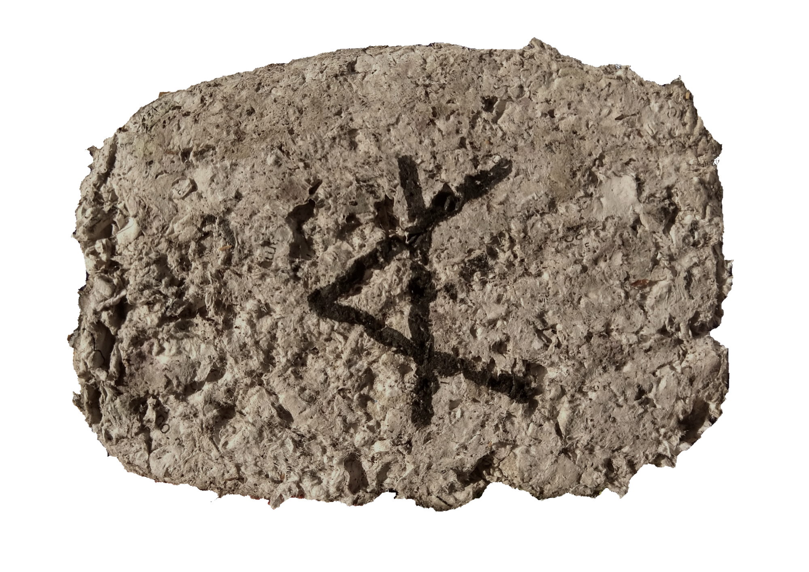
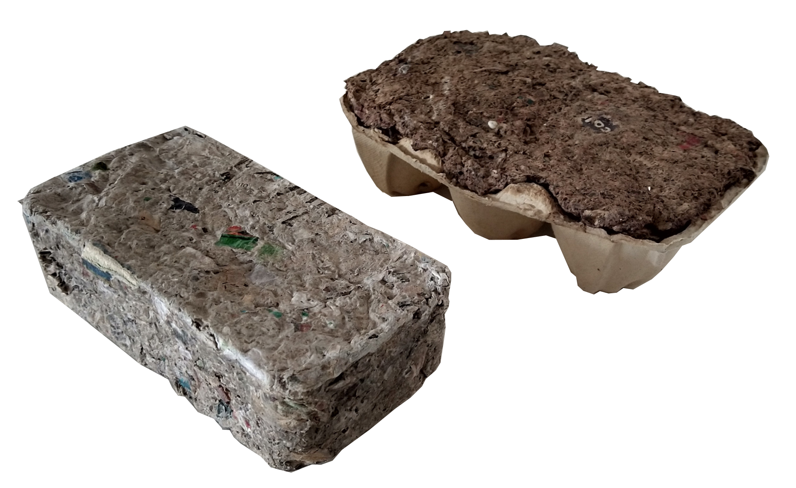
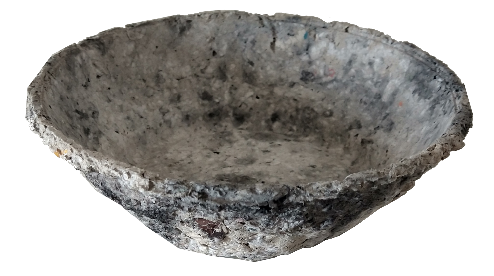
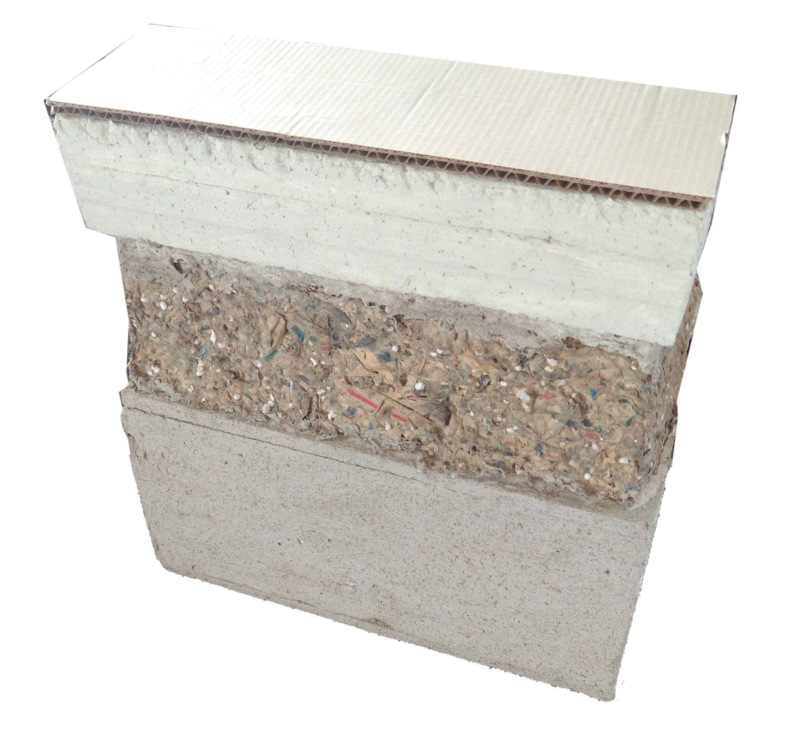
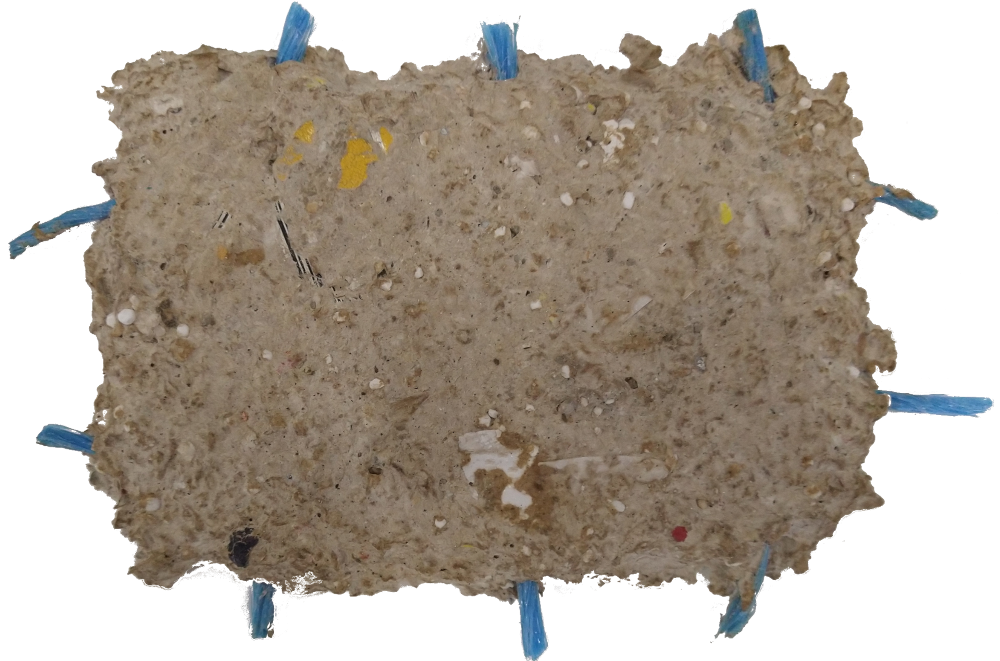
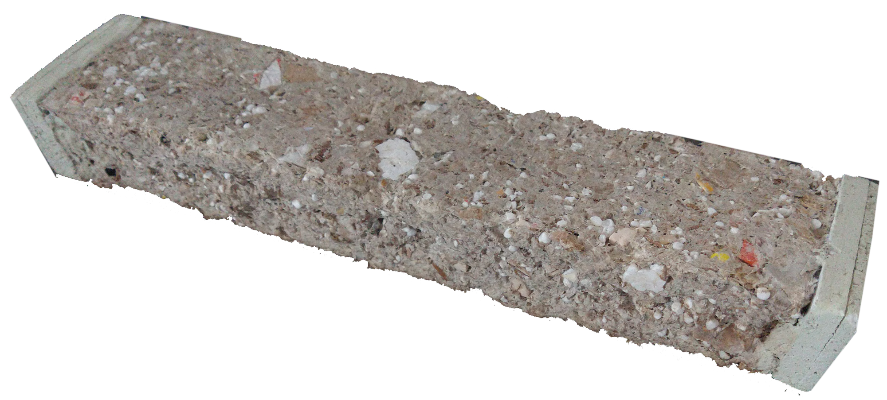
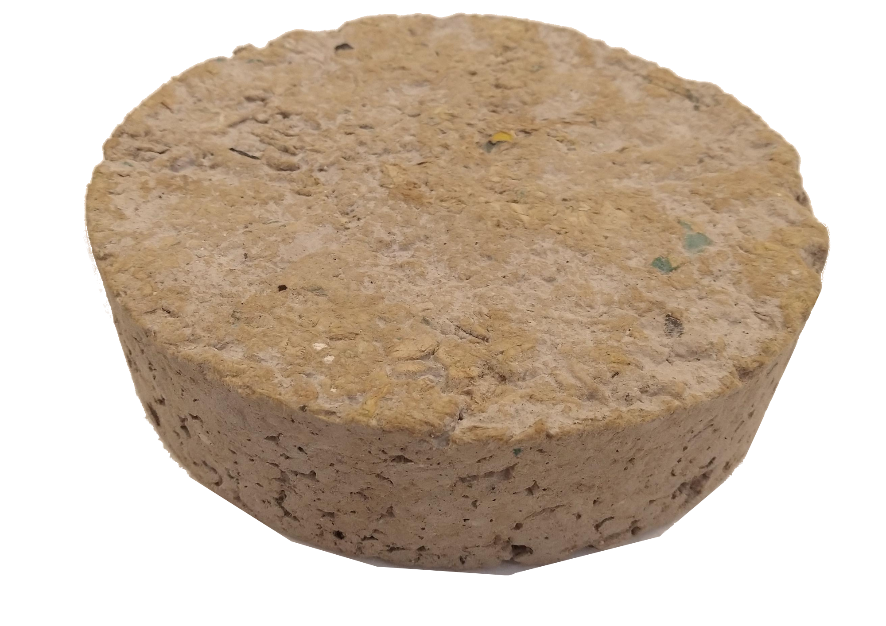

Paper is something that is present in my life as a way of allowing me to do crafts since I was in my early years of school, and since then I’ve been experimenting with it, refining the mixtures and forms to a point I was able to even use what i created as forniture for my bedroom.



For that reason, I always intended to applying this techniques to architecture maquetes. Some teachers did like it, giving the idea of considering it as a possible building material, due to paper's properties - a rather good insulator - having easy workability and, in an ecological scope, being easy to recycle.




this last piece was made entirely using paper, wood ash and lime. Later I gave it to teacher in the area of Civil Engineering for testing